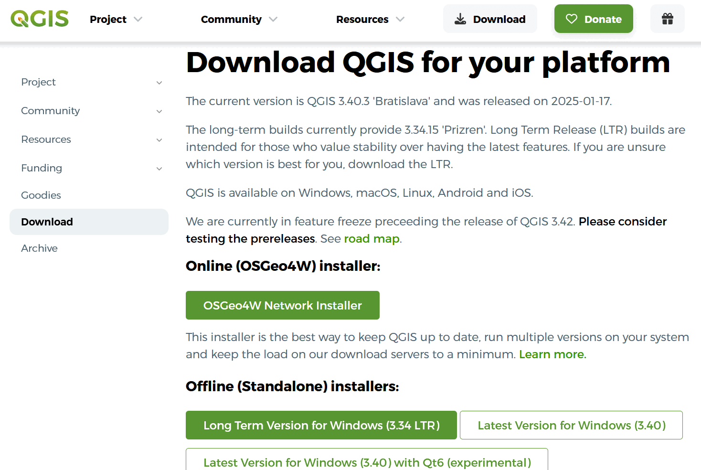
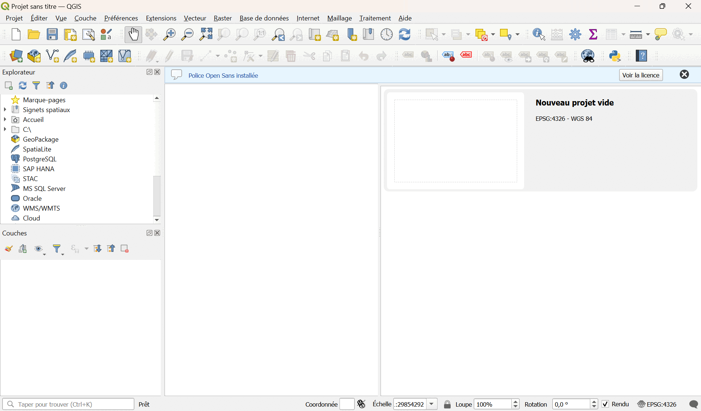
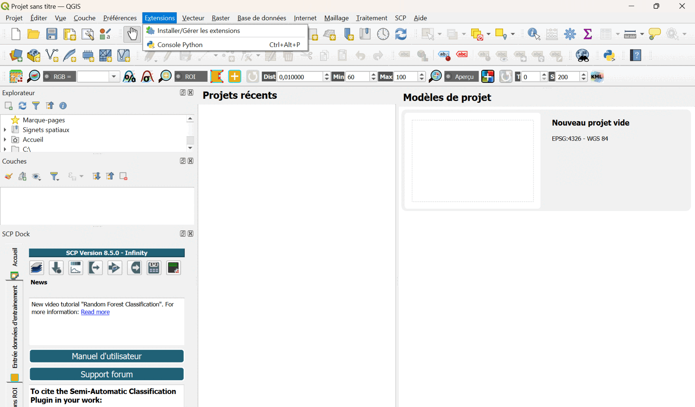

Préparation du TD
Il y a 3 pré-requis à ce TD :
-
L'installation de QGIS.
-
L'installation du plugin SCP.
-
Le téléchargement des données des exercices.
Cette partie du TD vous permettra de faire les 3, dans l'idéal en amont du TD.
Installation de QGIS
QGIS est un logiciel libre de SIG (Système d'Information Géographique).
Vous pouvez télécharger la dernière version de QGIS avec le lien suivant : https://qgis.org/download

Installation du plugin SCP
SCP (Semi-automatic Classification Plugin) est un plugin open-source de QGIS, contenant des outils pour de la classification d'images provenant d'applications de remote-sensing.
Vous trouverez la documentation du plugin SCP sur le lien suivant : https://semiautomaticclassificationmanual.readthedocs.io/en/latest/index.html
Pour installer le plugin sous QGIS :
-
Cliquez sur l'onglet "Extensions".
-
Cliquez sur "Installer/Gérer les extensions".
-
Dans la fenêtre qui apparait, rechercher "SCP".
-
Sélectionner "Semi-automatic Classification Plugin".
-
Cliquez sur "Installer l'extension".
De nouveaux onglets sont à présent disponibles dans QGIS.

La classification non-supervisée n'est plus disponible dans la dernière version de SCP.
Afin de contourner ce problème, vous pouvez installer dans un 2nd temps la version 7 du plugin.
Pour installer SCP version 7 :
-
Cliquez sur l'onglet "Extensions".
-
Cliquez sur "Installer/Gérer les extensions".
-
Dans la fenêtre qui apparait, cliquez sur "Paramètres".
-
Cliquez sur "Ajouter".
-
Dans la fenêtre qui apparait, remplir la section "Nom" avec "SCP", et la section "URL" avec "https://semiautomaticgit.github.io/SemiAutomaticClassificationPlugin_v7/repository.xml".
-
Cliquez sur OK.
-
Dans la fenêtre, aller dans la section "Toutes".
-
Sélectionnez la version 7 du plugin et cliquez sur "Installer l'extension".

Récupération des données du TD
Les données dont vous aurez besoin pour votre projet sont en général téléchargeables gratuitements sur un des sites suivants :
Les données du TD sont disponibles dans 4 dossiers :
-
SCP_supervisee_data
-
HOW15TM
-
S2B_MSIL2A_20231215T112359_N0510_R037_T30UVU_20231215T130705.SAFE
-
Venice
Vous utiliserez lors de ce TD 2 types de données :
-
Type raster : image matricielle avec plusieurs bandes spectrales.
-
Type vectoriel : SIG avec différentes couches d'information.